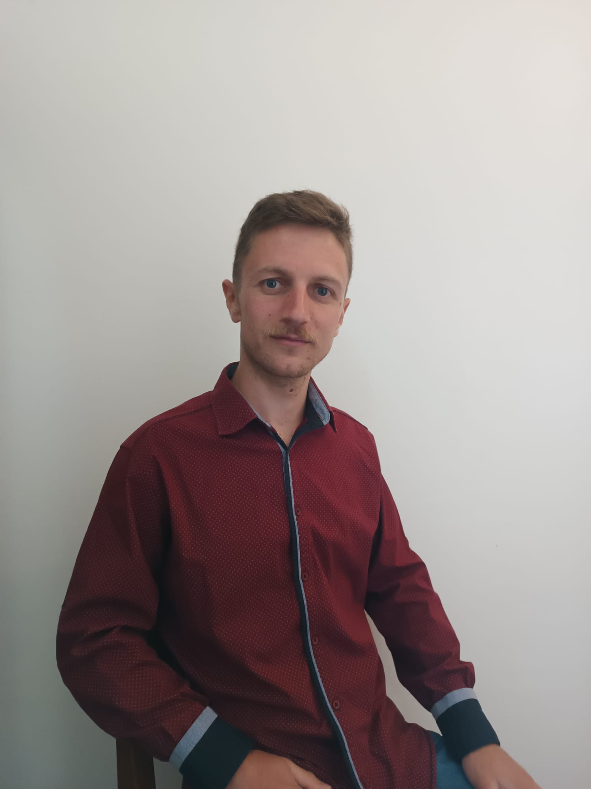

Data de nascimento: 22.05.1998
Contato: +55 47 9657-3456
E-mail: dejan.vasic2811@gmail.com
Trabalhar em projetos reais com objectivo de ganhar experiencia por causa de desenvolvimento de
comunidade e próprio desenvolvimento. Com vontade de trabalhar, aprender e aperfeiçar, dedicado e eficiente.
2024 - 2025 Trabalhei na „LaeTech“ para „EyeFlow.AI“ Joinville
Desenvolvimento e integração de soluções de Visão Computacional Industrial usando a plataforma EyeFlow.AI.
Trabalhei em sistemas de controle de qualidade baseados em IA, implementando redes neurais para
detecção de objetos em tempo real e inspeção industrial automatizada.
Focado em Edge Computing e integração IoT, otimizando algoritmos de visão computacional para
rodar em hardware industrial e gerenciando o fluxo de dados entre dispositivos e nuvem.
2022 - Trabalhei em „Micro Circuit Development“ LLC Novi Sad
Projeto de um plugin (em língua de programação C) para um 3D CAD programa, meta de plugin era para transferir imagem na uma tela feita usando tecnologia de 3D autoestereoscópico (sem óculos).
Projeto de localização (mapa) de veículos para uma empresa de táxi (para pataforma Android).
2020 - Trabalhei em „Smrčak-BBS“ d.o.o Bajina Bašta (compamhia de família)
Projeto de economir de energia baseado em controle de consumidores en dependencia
de produção de energia solar. Projeto foi feito usando ambiente de desenvolvimento
chamado „Arduino“ escrito com C/C++ lingua de programaçoes, também usando
ambiente de desenvolvimento „Processing“ baseado em Java.
Projeto de mobilidade de painéis solares dependendo a posição do sol, também escrito em esses dois ambientes de desenvolvimento.
2013 - 2017 „Técnico em Constrição de Máquinas com uso de Computadores“ - „Mašinski
tehničar za kompjutersko konstruisanje“ Ensino médio técnico Bajina Bašta
Conhecimento de linguagens de programação: C, C#, Java, Javascript, HTML, CSS, Python, SQL
Trabalho em pacotes de software: SolidWorks, Microsoft Office, Photoshop, Autocad
Instalação e trabalho em sistemo operativo Windows e Linux
Uso de linha de Comando do Windows e Linux
Línguas:
Sérvio - Nativo
Inglês - Avançado
Português - Avançado
Munincipal e regional competição de aula „Constução com uso de computador“ em software chamado SolidWorks